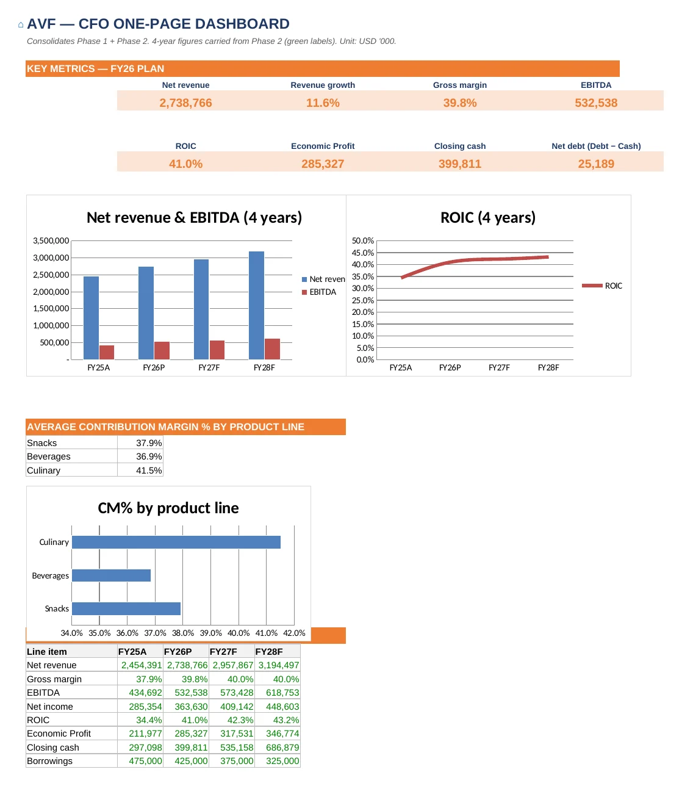
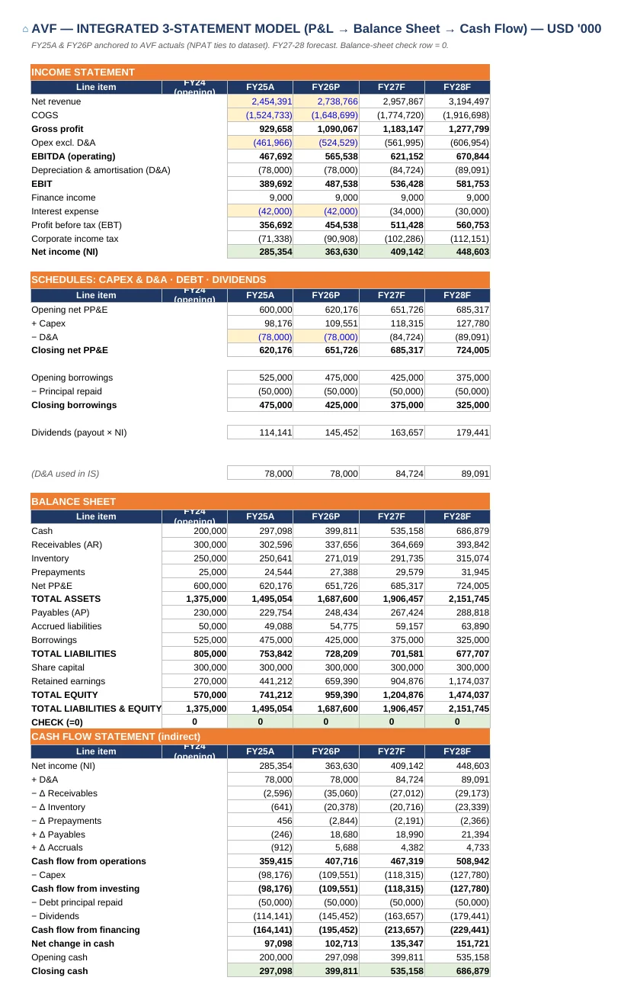
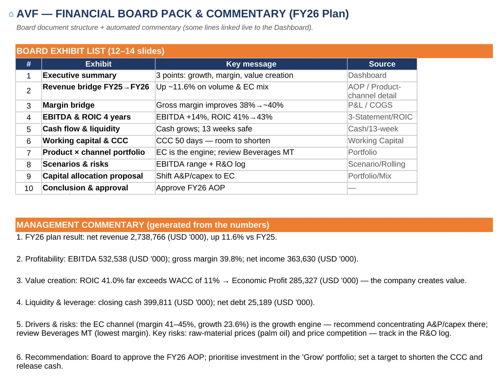
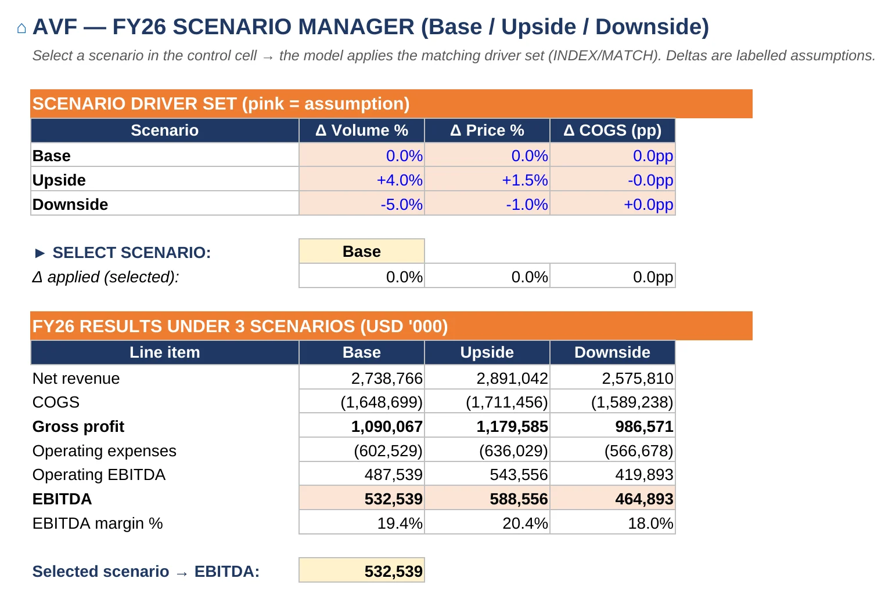
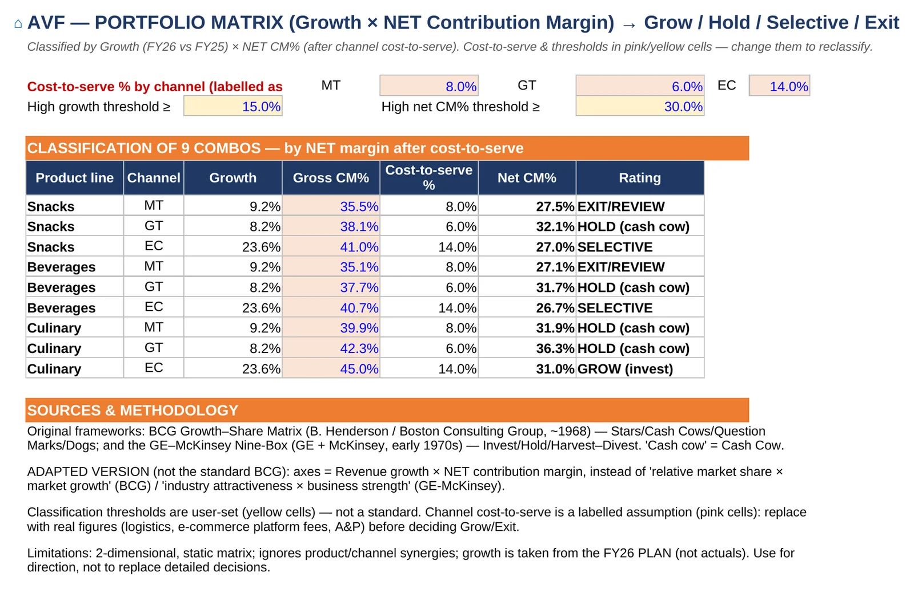
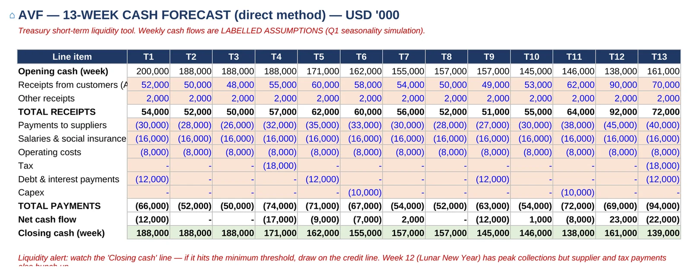
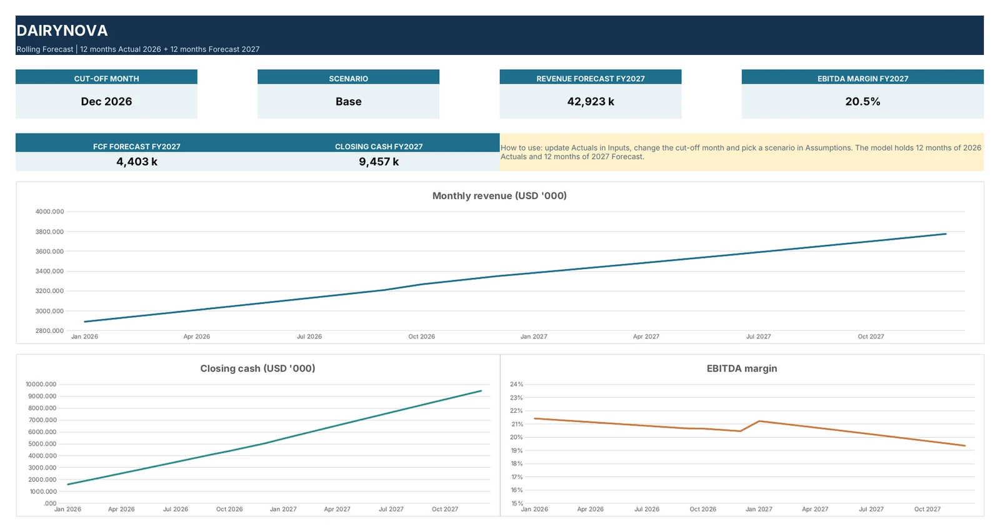
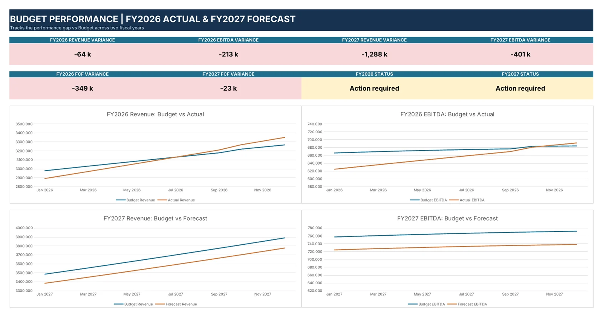
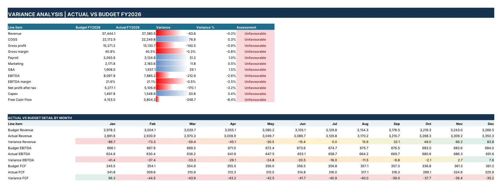
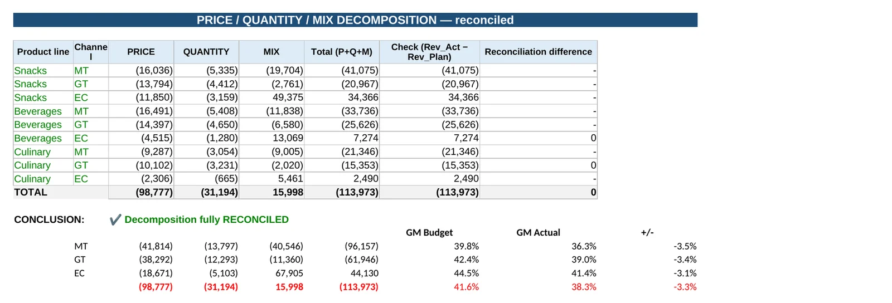

Integrated 3-statement models, driver-based budgets, rolling forecasts, variance analysis and board packs — built by a finance controller with 20 years in telecom, precision manufacturing and AI software.
All companies and figures below are fictional and built for demonstration. Downloads are Portfolio Editions: every number, chart and layout is intact, but formulas are converted to values. Full formula versions are shared with clients on request.
A mid-size snacks, beverages and culinary producer selling through three channels needed one model that takes the plan from revenue drivers all the way to cash, value creation and a decision for the Board — instead of disconnected spreadsheets.






Management wanted to roll the forecast forward every month — 12 months of actuals plus 12 months ahead — and see at a glance where the business is drifting from budget, without rebuilding the file each close.



Revenue came in below plan. The Board needed to know how much was price, how much was volume and how much was mix — and the explanation had to reconcile exactly, not be a narrative guess.

The same thinking, delivered as browser apps: what-if drivers that recalculate the P&L instantly, and a driver-based budgeting cockpit.
The Command Center interface is in Vietnamese (built for a training programme); the P&L Cockpit has an English switch.